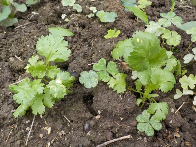
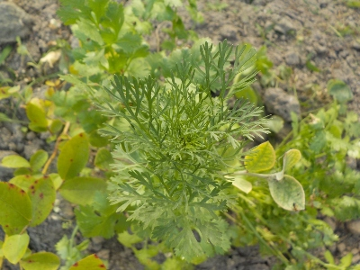
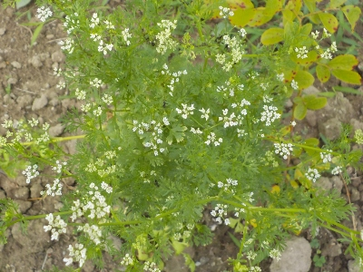
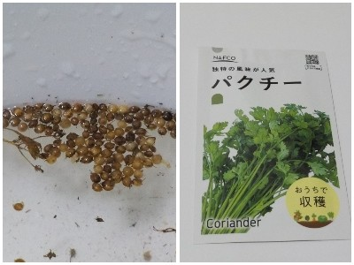

パクチーを種蒔きしたけどあんまり育っていないです。
更新日 : 2026/06/21

去年も育てたんですが、あんまり育ちませんでした。
去年採ったタネを今年蒔いたんですが、今年も小さい。
このままだと今年も食べずに花を見てタネを採取するだけかな。
更新日 : 2026/06/21

去年も育てたんですが、あんまり育ちませんでした。
去年採ったタネを今年蒔いたんですが、今年も小さい。
このままだと今年も食べずに花を見てタネを採取するだけかな。
更新日 : 2026/07/26

背が高くなって細い葉っぱが出てきました。もうすぐ花が咲くんですね。
量が少ないので食べる気はしないんですが、花見はするつもりでいます。
更新日 : 2026/08/16

去年はこんなにいっぱい花が咲かなかったですが、今年は大量です。何株も並んでたら見栄えが良かったでしょうね。
来年はパクチーの花を1列作りたいな。
更新日 : 2026/08/16

パクチーが枯れたので実を収穫したんですが、実を割ってみたらタネが入っていませんでした。
水にタネを入れたらほとんどが水に浮いたので、タネが出来る前に枯れたみたいです。
残念ですね。残念過ぎたので、すぐにタネを買いに行きました。
なかなか育たないパクチー